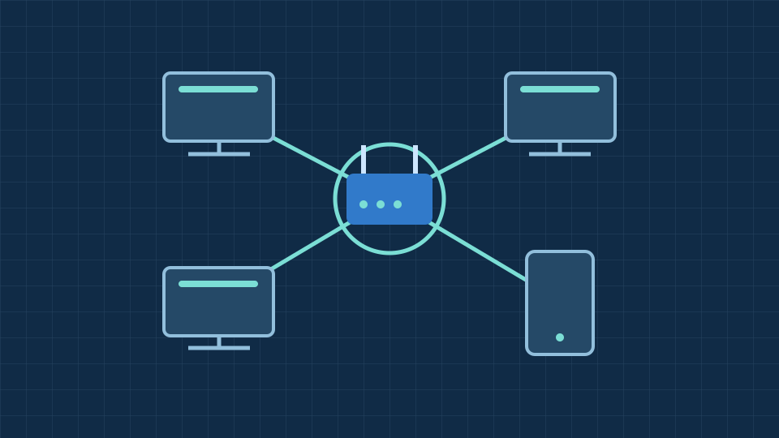
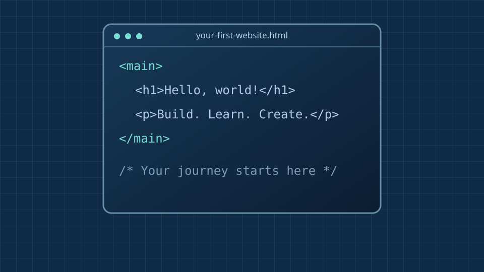

Code.org · IT basics
CPU, memory, input & output
See how a computer takes input, processes information, stores data and produces output.
Watch on YouTube (opens a new tab)Welcome to IT Hub
Explore computers, software, networks and coding through simple guides and video tutorials.

Understand the technology you use every day.

Discover what is inside a PC and how it works.

Explore networks, the internet and online safety.

Take your first steps with HTML, CSS and coding.
Code.org · IT basics
See how a computer takes input, processes information, stores data and produces output.
Watch on YouTube (opens a new tab)Code.org · IT basics
Explore how physical components and programs work together to run your computer.
Watch on YouTube (opens a new tab)Code.org · IT basics
Discover how electrical signals, light and radio waves carry data between devices.
Watch on YouTube (opens a new tab)Everyday computing
Learn what the processor, memory, storage and screen do, and which features matter for college work and coding.
Explore laptopsInside a computer
Get to know the CPU, RAM, motherboard and storage, then see how they work together in a desktop PC.
Explore PC components